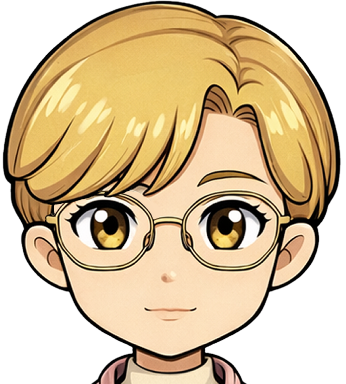

關於我｜About Me
我是一個普通人，是一位成人確診 Asperger's，也是 Asperger’s 的自學漫畫家。
我用電腦繪圖，把日常的喜怒哀樂化成四格漫畫，像用一支筆在心頭細細地書寫。
在這裡，沒有繁複的故事，只有生活中真實的碎片，和一個人試著和自己和解的心情。
我的創作不只是畫圖，更是一種自我對話，一場情緒的旅程。
對我而言，世界有些複雜，人與人之間的距離，總讓我難以捉摸。
說話不是我的強項，但透過繪畫與書寫，我能更真實地表達內心的聲音。
希望這些文字與圖像，能陪伴那些感同身受，或曾在孤獨與掙扎中尋找光的人。
我畫的漫畫，不只是日常的紀錄，也是自我療癒的過程。
生活不容易，創作也有高低起伏，但我相信，繪畫是一種語言，是心靈的呼吸。
漫畫是我與世界對話的方式，它幫助我理清思緒，轉化情緒，也讓我在孤單中找到一些理解。
這些故事都源自真實生活，沒有誇張與修飾，只是靜靜地訴說那些不被看見的感受。
如果你也曾在某些時刻覺得不被理解，或者感到格格不入，
這是我的世界，也是我願意分享給你的心靈角落。
希望這裡的每一幅圖，都能給你一點共鳴與陪伴。
Hi, I’m just an ordinary person—also a self-taught comic artist living
with Asperger’s, diagnosed as an adult.
With my digital pen, I transform the everyday joys, sorrows, and silent
struggles into four-panel comics,
like gently writing with a brush upon the canvas of my heart.
Here, there are no elaborate stories—only fragments of real life, and
one soul trying to make peace with itself.
My creations are more than drawings; they are conversations with myself,
an emotional journey.
To me, the world is complicated, and the distances between people are
often hard to grasp.
Speaking isn’t my strongest suit, but through drawing and writing, I can
express the true voice inside my heart.
I hope these words and images can be companions to those who understand,
or those seeking light amidst loneliness and struggle.
My comics are not just daily records; they are a process of healing.
Life is never easy, and creativity has its highs and lows, but I believe
drawing is a language—a breath of the soul.
Comics are how I speak to the world; they help me untangle my thoughts,
transform my feelings,
and find understanding in solitude.
These stories come from real life—without exaggeration or
embellishment—quietly telling the unseen emotions.
If you have ever felt misunderstood or out of place, this is my world, a
quiet corner of the heart I offer to you.
I hope every image here brings you a little resonance and companionship.